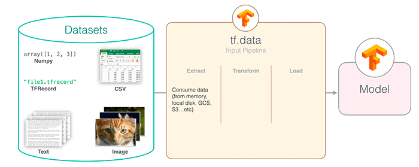

TensorFlow tf.data API
TensorFlow tf.data API は、TensorFlow が提供する高効率なデータ入力パイプライン構築ツールであり、大規模データセットの処理に特化しています。
tf.data API は、従来のデータ読み込み方式におけるパフォーマンスのボトルネック問題を解決し、データ前処理とモデルトレーニングを並行して実行できるようにします。
なぜ tf.data API が必要か
- パフォーマンス上の利点：従来の方法より10〜100倍高速
- メモリ効率：超大規模データセットのストリーミング処理をサポート
- 柔軟性：組み合わせ可能なデータ変換操作
- 使いやすさ：簡潔なチェーン呼び出しインターフェース

中核的概念
Dataset オブジェクト
Dataset は tf.data API の中心的な抽象概念であり、一連の要素を表します。各要素には1つ以上のテンソルが含まれます。
Dataset を作成する3つの主要な方法
1、メモリデータから作成
例
dataset = tf.data.Dataset.from_tensor_slices([1, 2, 3, 4, 5])
2、ファイルから作成
例
dataset = tf.data.TextLineDataset(["file1.txt", "file2.txt"])
3、ジェネレータから作成
例
def gen():
for i in range(10):
yield i
dataset = tf.data.Dataset.from_generator(gen, output_types=tf.int32)
for i in range(10):
yield i
dataset = tf.data.Dataset.from_generator(gen, output_types=tf.int32)
データ変換操作
| 操作タイプ | よく使われるメソッド | 説明 |
|---|---|---|
| 単一要素変換 | map, filter |
各要素を個別に処理 |
| 複数要素変換 | batch, window |
複数の要素に関する操作 |
| 全体変換 | shuffle, repeat |
データセット全体の動作に影響する |
主要操作の詳細
1. map 操作
map最も一般的に使用される変換操作で、各要素にカスタム関数を適用するために使われます。
例
# 各数値を二乗する
dataset = dataset.map(lambda x: x**2)
# 画像データを処理する典型的な使用法
def process_image(image_path):
img = tf.io.read_file(image_path)
img = tf.image.decode_jpeg(img, channels=3)
img = tf.image.resize(img, [256, 256])
return img
image_dataset = image_dataset.map(process_image)
dataset = dataset.map(lambda x: x**2)
# 画像データを処理する典型的な使用法
def process_image(image_path):
img = tf.io.read_file(image_path)
img = tf.image.decode_jpeg(img, channels=3)
img = tf.image.resize(img, [256, 256])
return img
image_dataset = image_dataset.map(process_image)
ベストプラクティス：
- 使用
num_parallel_callsパラメータで並列処理を有効にする - CPU 集約的な操作の場合は、設定
tf.data.experimental.AUTOTUNE
2. batch 操作
複数の要素を1つのバッチに結合します。
例
# サイズ32のバッチを作成
batched_dataset = dataset.batch(32)
# 不等長シーケンスのパディングバッチ
padded_batch = dataset.padded_batch(
32,
padded_shapes=([None], []),
padding_values=(0.0, 0)
)
batched_dataset = dataset.batch(32)
# 不等長シーケンスのパディングバッチ
padded_batch = dataset.padded_batch(
32,
padded_shapes=([None], []),
padding_values=(0.0, 0)
)
3. shuffle 操作
データの順序をシャッフルすることは、トレーニングにおいて非常に重要です。
例
# 基本的な使い方
shuffled = dataset.shuffle(buffer_size=10000)
# ベストプラクティス：buffer_sizeはデータセットサイズ以上にすべき
full_shuffle = dataset.shuffle(buffer_size=len(dataset))
shuffled = dataset.shuffle(buffer_size=10000)
# ベストプラクティス：buffer_sizeはデータセットサイズ以上にすべき
full_shuffle = dataset.shuffle(buffer_size=len(dataset))
パフォーマンス最適化のヒント
プリフェッチ (Prefetch)
データの読み込みとモデルの実行をオーバーラップさせます：
例
dataset = dataset.prefetch(buffer_size=tf.data.experimental.AUTOTUNE)
並列化処理
例
dataset = dataset.map(
process_func,
num_parallel_calls=tf.data.experimental.AUTOTUNE
)
process_func,
num_parallel_calls=tf.data.experimental.AUTOTUNE
)
キャッシュ機構
例
# メモリキャッシュ
dataset = dataset.cache()
# ファイルキャッシュ
dataset = dataset.cache(filename='/tmp/cache')
dataset = dataset.cache()
# ファイルキャッシュ
dataset = dataset.cache(filename='/tmp/cache')
完全なサンプル
画像分類データパイプライン
例
def build_image_pipeline(file_pattern, batch_size=32, is_training=True):
dataset = tf.data.Dataset.list_files(file_pattern)
if is_training:
dataset = dataset.shuffle(10000)
dataset = dataset.map(
lambda x: load_and_preprocess_image(x),
num_parallel_calls=tf.data.experimental.AUTOTUNE
)
dataset = dataset.batch(batch_size)
if is_training:
dataset = dataset.repeat()
return dataset.prefetch(buffer_size=tf.data.experimental.AUTOTUNE)
def load_and_preprocess_image(path):
image = tf.io.read_file(path)
image = tf.image.decode_jpeg(image, channels=3)
image = tf.image.resize(image, [224, 224])
image = tf.cast(image, tf.float32) / 255.0 # 正規化
return image
dataset = tf.data.Dataset.list_files(file_pattern)
if is_training:
dataset = dataset.shuffle(10000)
dataset = dataset.map(
lambda x: load_and_preprocess_image(x),
num_parallel_calls=tf.data.experimental.AUTOTUNE
)
dataset = dataset.batch(batch_size)
if is_training:
dataset = dataset.repeat()
return dataset.prefetch(buffer_size=tf.data.experimental.AUTOTUNE)
def load_and_preprocess_image(path):
image = tf.io.read_file(path)
image = tf.image.decode_jpeg(image, channels=3)
image = tf.image.resize(image, [224, 224])
image = tf.cast(image, tf.float32) / 255.0 # 正規化
return image
よくある質問と回答
Q1: 非常に大きなデータセットを処理するには？
解決策：
- 使用
tf.data.Dataset.list_filesファイルデータセットを作成する - インターリーブ読み取りを使用 (
interleave) で複数ファイルを並列処理する - TFRecord 形式でのデータ保存を検討する
Q2: データパイプラインの速度が遅いのはなぜ？
トラブルシューティング手順：
- プリフェッチを使用しているか確認 (
prefetch) - map 操作が設定されていることを確認
num_parallel_calls - shuffle の buffer_size が十分に大きいか検証する
- 使用を検討する
tf.data.experimental.snapshot中間結果をキャッシュする
ベストプラクティスまとめ
- できるだけ早く shuffle する：データパイプラインの初期段階で shuffle を適用する
- バッチ処理を遅延させる：map を適用した後にバッチ処理を行う
- 並列処理を活用する：可能な限り並列化操作を使用する
- オーバーラップ実行：prefetch を使用してデータ読み込みとモデル実行をオーバーラップさせる
- 適切なキャッシュ：不変のデータをキャッシュする
これらの原則に従うことで、高効率なデータ入力パイプラインを構築し、GPU の計算能力を最大限に活用して、モデルのトレーニング効率を大幅に向上させることができます。
その他の拡張
クリックしてノートを共有
ノートは本記事の内容を拡張したものである必要があります！
記事投稿はこちらをクリック
登録招待コードの取得方法
ノートを共有する前にログインが必要です！
登録招待コードの取得方法